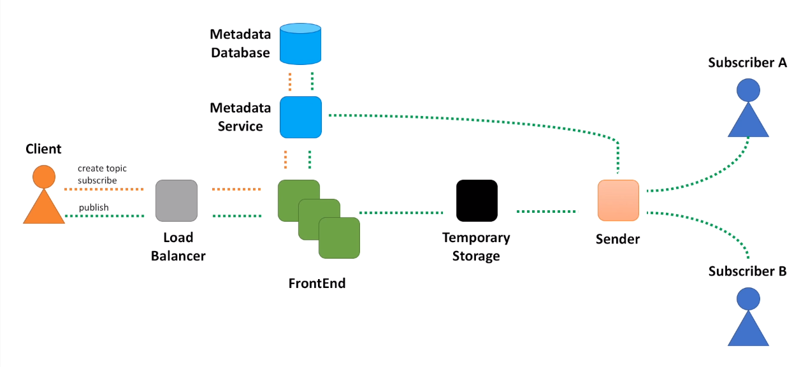
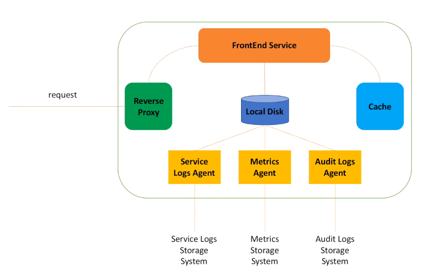
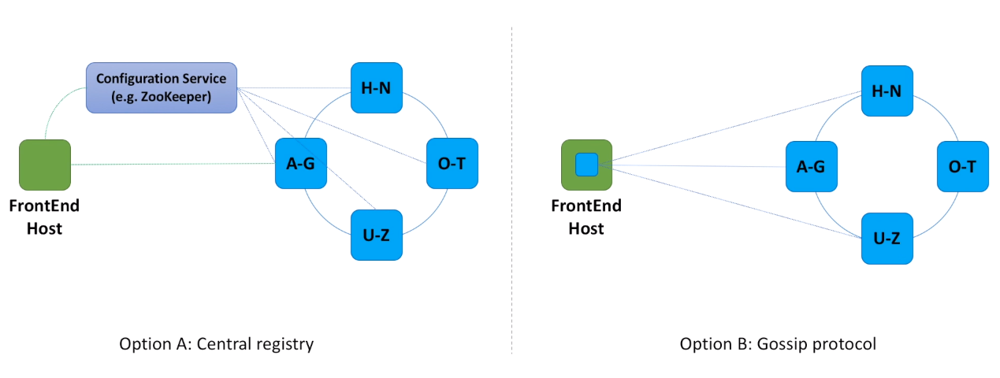
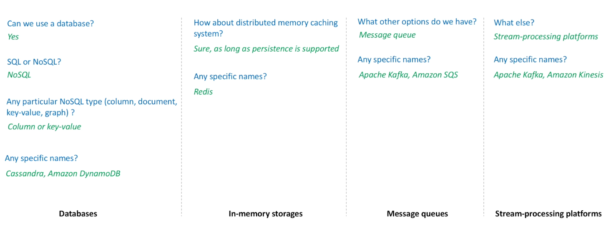
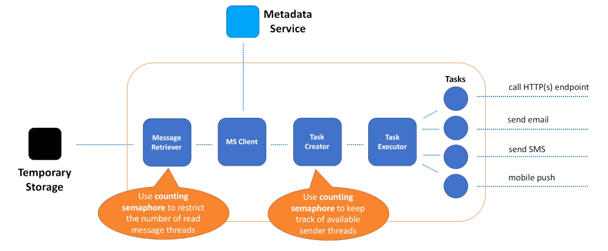
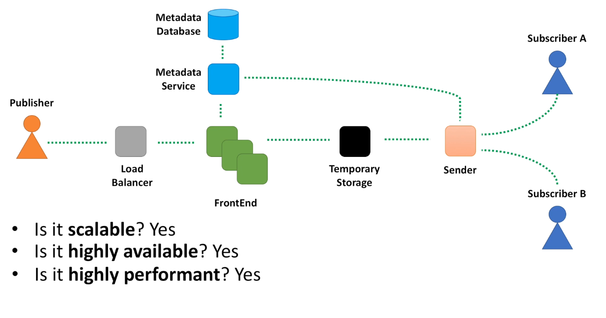

Notification Service
Problem Statement
- There is a component called Publisher which produces messages that need to be delivered to a group of other components, called Subscribers.
- We could have setup a synchronous communication between Publisher and Subscribers, when Publisher calls each Subscriber in some order and waits for the response.
- But this introduces many different challenges: hard to scale such system when number of subscribers and messages grow and hard to extend such solution to support different types of subscribers.
- Instead, we can introduce a new system that can register an arbitrary large number of publishers and subscribers and coordinates message delivery between them.
- The problem statement is ambiguous as usual. To make it less vague we need to start asking clarifying questions.
- When we talk about functional requirements, we want to define system behavior, or more specifically APIs - a set of operations the system will support.
- When we talk about non-functional requirements, we basically mean such system qualities as scalability, maintainability, testability and others.
Functional Requirements
- createTopic(topicName)
- publish(topicName, message)
- subscribe(topicName, endpoint)
Non-Functional Requirements
- Scalable (supports an arbitrarily large number of topics, publishers and subscribers)
- Highly Available (tolerates hardware / network failures, no single point of failure)
- Highly Performant (keep end-to-end latency as low as possible, so that messages are delivered to subscribers as soon as possible)
- Durable (messages must not be lost, each subscriber must receive every message at least once)
- Topic : Represents a named resource to which messages are sent. You can think of it as a bucket that stores messages from a publisher and all subscribers receive a copy of a message from the bucket.
High Level Architecture
Quite similar to Distributed Message Queue

- All requests coming from our clients will go through a load balancer first.
- This will ensure requests are equally distributed among requests processing servers.
- And the component that does this initial request processing is a FrontEnd service.
- We will use a database to store information about topics and subscriptions.
- We will hide the database behind another miscroservice, Metadata service.
- There are several reasons for this decision.
- First, separation of concerns, a design principle that teaches us to provide access to the database through a well-defined interface. It greatly simplifies maintenance and ability to make changes in the future.
- Second, Metadata service will act as a caching layer between the database and other components. We do not want to hit database with every message published to the system. We want to retrieve topic metadata from cache.
- Next, we need to store messages for some period of time.
- This period will generally be short if all subscribers are available and message was successfully sent to all of them.
- Or we may need to store messages a bit longer (say several days), so that messages can be retried later if some subscriber is not available right now.
- And one more component we need is the one that retrieves messages from the message store and sends them to subscribers.
- Sender also needs to call Metadata service to retrieve information about subscribers.
- When create topic and subscribe APIs are called, we just need to store all this information in the database.
- The pattern that consists of load balancer, frontend, metadata store and service is so common in the world of distributed systems, that you can apply it during many system design interview discussions.
Frontend Web Service
For more detail see Distributed Message Queue

- When request lands on the host, the first component that picks it up is a Reverse Proxy.
- Reverse proxy : Lightweight server responsible for several things:
- Such as SSL termination, when requests that come over HTTPS are decrypted and passed further in unencrypted form. At the same time proxy is responsible for encrypting responses while sending them back to clients.
- Second responsibility is compression (for example with gzip), when proxy compresses responses before returning them back to clients. This way we reduce the amount of bandwidth required for data transfer. This feature is not relevant for notification service, as in our case responses are tiny and mostly represent acknowledgment that request have completed successfully. But this feature may be very useful for systems when large amount of data is returned by the service.
- Next proxy feature we may use is to properly handle FrontEnd service slowness. We may return HTTP 503 status code (which is service unavailable) if FrontEnd service becomes slow or completely unavailable.
- Reverse proxy then passes request to the FrontEnd web service.
- We know that for every message that is published, FrontEnd service needs to call Metadata service to get information about the message topic.
- To minimize number of calls to Metadata service, FrontEnd may use local cache.
- We may use some well-known cache implementations (like Google Guava) or create our own implementation of LRU cache (least recently used).
- FrontEnd service also writes a bunch of different logs.
- We definitely need to log information about service health, write down exceptions that happen in the service.
- We also need to emit metrics. This is just a key-value data that may be later aggregated and used to monitor service health and gather statistics. For example, number of requests, faults, calls latency, we will need all this information for system monitoring.
- Also, we may need to write information that may be used for audit, for example log who and when made requests to a specific API in the system.
- Important to understand here, is that FrontEnd service is responsible for writing log data.
- But the actual log data processing is managed by other components, usually called agents.
- Agents are responsible for data aggregation and transferring logs to other system, for post processing and storage.
- This separation of responsibilities is what helps to make FrontEnd service simpler, faster and more robust.
Metadata Service
- The next component in the notification system is a Metadata service.
- A web service responsible for storing information about topics and subscriptions in the database. It is a distributed cache.
- When our notification service becomes so popular that we have millions of topics, all this information cannot be loaded into a memory on a single host.
- Instead, information about topics is divided between hosts in a cluster.
- Cluster represents a consistent hashing ring.
- Each FrontEnd host calculates a hash, for example MD5 hash, using some key, for example a combination of topic name and topic owner identifier.
- Based on the hash value, FrontEnd host picks a corresponding Metadata service host.
Let's discuss in more details two different approaches how FrontEnd hosts know which Metadata service host to call.

- In the first option we introduce a component responsible for coordination. This component knows about all the Metadata service hosts, as those hosts constantly send heartbeats to it. Each FrontEnd host asks Configuration service what Metadata service host contains data for a specified hash value. Every time we scale out and add more Metadata service hosts, Configuration service becomes aware of the changes and re-maps hash key ranges.
- In the second option we do not use any coordinator. Instead, we make sure that every FrontEnd host can obtain information about all Metadata service hosts. And every FrontEnd host is notified when more Metadata service hosts are added or if any Metadata host died due to a hardware failure. There are different mechanisms that can help FrontEnd hosts discover Metadata service hosts. We will not dive into this topic here, only mention the Gossip protocol. This protocol is based on the way that epidemics spread. Computer systems typically implement this type of protocol with a form of random "peer selection": with a given frequency, each machine picks another machine at random and shares data.
Temporary Storage

- After being initially processed by FrontEnd service, message is then passed to the Temporary Storage service.
- Why do we call it temporary and not just storage? Because messages supposed to stay in this storage for a very short period of time.
- Sooner we can deliver messages to subscribers is better, unless topic is configured to deliver messages with some delay.
- What do we expect from the Temporary Storage service?
- First, it must be fast, highly-available and scalable.
- Second, it has to guarantee data persistence, so that messages survive unavailability of a subscriber. And can be re-delivered later.
- Several design options can be considered and this is a great opportunity for you to show breadth and depth of your knowledge to the interviewer. Let's see how many different directions the interview may go from here.
- You can start discussing databases with the interviewer, consider pros and cons of SQL versus NoSQL databases, evaluate different NoSQL database types and give specific names to the interviewer. For example, when we consider SQL or NoSQL for storing messages, we may mention that we do not need ACID transactions, we do not need to run complex dynamic queries, we do not plan to use this storage for analytics or data warehousing. Instead, we need a database that can be easily scaled for both writes and reads. It should be highly available and tolerate network partitions. Summing all these up, it is clear that NoSQL wins for our use case. If we need to choose a particular NoSQL database type, we need to mention that messages have limited size (let's say not more than 1 MB), meaning that we do not actually need a document store. And there is no any specific relationship between messages. And thus, we can exclude graph type as well. Which leaves us with either column or key-value database types. And we can mention several well-regarded names of these two database types. For example, Apache Cassandra and Amazon DynamoDB.
- Next option we can evaluate is in-memory storage. We better choose an in-memory store that supports persistence, so that messages can live for several days before being dropped. And also mention some great in-memory storage solutions like Redis.
- One more option to consider - message queues. Distributed message queues have all the characteristics we require and also can be discussed in more details.
- And if you want to further impress interviewer, you can talk about other options, for example stream-processing platforms. Discuss pros and cons and compare this option with a distributed queue solution. And of course, do not forget to mention some best-in-class solutions, for example Apache Kafka and Amazon Kinesis. Here we reference AWS solutions, but feel free to mention similar solutions from other public clouds. Whatever solution you feel comfortable with.
Sender Service
- Once data is stored in temporary storage, we can now start sending message to subscribers.
- We can see that the ideas on which Sender Service is built upon can easily be applied to other distributed systems. If you design a solution that requires data retrieval, processing, and sending messages in a fan-out matter, think of the following ideas.

Message Retrieval
- The first thing that Sender does is message retrieval. This is achieved by having a pool of threads, where each thread tries to read data from the Temporary Storage. We can implement a naive approach and always start a predefined number of message retrieval threads. The problem with this approach is that some threads may be idle, as there may not be enough messages to retrieve. Or another extreme, when all threads may quickly become occupied and the only way to scale message retrieval would be adding more Sender hosts.
- A better approach is to keep track of idle threads and adjust number of message retrieval threads dynamically. If we have too many idle threads, no new threads should be created. If all threads are busy, more threads in the pool can start reading messages. This not only helps to better scale the Sender service, it also protects Temporary Storage service from being constantly bombarded by Sender service. This is especially useful when Temporary Storage service experiences performance degradation, and Sender service can lower the rate of message reads to help Temporary Storage service to recover faster.
- How can we implement this auto-scaling solution? Semaphores to the rescue.
- Conceptually, a semaphore maintains a set of permits. Before retrieving the next message, thread must acquire a permit from the semaphore. When the thread has finished reading the message a permit is returned to the semaphore, allowing another thread from the pool to start reading messages.
- What we can do is to adjust a number of these permits dynamically, based on the existing and desired message read rate.
Post Message Retrieval
- After message is retrieved, we need to call Metadata service to obtain information about subscribers.
- Probably, some of you are wondering why we need to call Metadata service here, if we already called it in FrontEnd service and could have passed information about subscribers
along with the message. Good point to discuss with the interviewer.
- One of the main reasons not to pass this information along with the message itself, is that list of subscribers may be relatively big.
- For example, several thousands of HTTP endpoints, or a long list of email addresses. We will need to store all this information with every incoming message and our Temporary Storage service will need to pay this price.
- Not all key-value and column storages can store big messages, which may require us to use document database instead.
- These all are very good consideration to mention to the interviewer.
- After we obtained a list of subscribers, we can start sending messages to all of them.
- Should we just iterate over a list of subscribers and make a remote call to each one of them?
- What should we do if message delivery failed to one subscriber from the list?
- What if one subscriber is slow and delivery to other subscribers is impacted due to this?
- If you think about all these questions or if interviewer makes you thinking about them, you will probably figure out that this option is far from optimal.
The better option is to split message delivery into tasks. Where each task is responsible for delivery to a single subscriber. This way we can deliver all messages in parallel and isolate any bad subscriber. So, let's introduce two new components - Task Creator and Executor.
- These components are responsible for creating and scheduling a single message delivery task.
- How can we implement these components? Create a pool of threads, where each thread is responsible for executing a task.
- And similar to the Message Retriever component, we can also use semaphores to keep track of available threads in the pool.
- If we have enough threads to process newly created tasks, we simply submit all tasks for processing.
- If we do not have enough threads available at the moment, we may postpone or stop message processing and return the message back to the Temporary Storage.
- In this case, a different Sender service host may pick up this message. And that host may have enough threads to process the message.
- This approach allows to better handle slow Sender service host issues.
- Each task is responsible for message delivery to a single subscriber.
- Tasks may delegate actual delivery to other microservices.
- For example, a microservice responsible for sending emails or SMS messages.
What else is important
- How to make sure notifications will not be sent to users as spam? We need to register subscribers. All subscribers need to confirm they agree to get notification from our service. Every time new subscriber is registered, we may send a confirmation message to the HTTP endpoint or email. Endpoint and email owners need to confirm the subscription request.
- When publishers send messages to our notification service, FrontEnd service will make sure duplicate submissions are eliminated. This helps to avoid duplicates while accepting messages from publishers. But when the Sender service delivers messages to subscribers, retries caused by network issues or subscriber's internal issues may cause duplicate messages at the subscriber end. So, subscribers also become responsible for avoiding duplicates.
- If retries cause duplicates, maybe we do not need to retry? Retry is one of the options to guarantee at least once message delivery. Our system may retry for hours or even days until messages is successfully delivered or maximum allowed number of retries have been reached. Other option may be to send undelivered messages to a different subscriber. Or store such messages in a system that can be monitored by subscribers and subscribers then decide what to do with undelivered messages. It would be great if our notification system provides a way for subscribers to define retry policy and what to do in cases when a message cannot be delivered after retries limit is reached.
- Does our system guarantee any specific message order, for example first-come-first-delivered? And the short answer is no, it does not guarantee any specific order. Even if messages are published with some attribute that preserves the order, for example sequence number or timestamps, delivery of messages does not honor this. Delivery tasks can be executed in any order, slower Sender hosts may fall behind, message delivery attempt may fail and retry will arrive in a wrong order.
- Security always has to be a top priority. We need to make sure only authenticated publishers can publish messages, only registered subscribers can receive them, messages are always delivered to the specified set of subscribers and never to anyone else. Encryption using SSL over HTTP helps to protect messages in transit. And we also need to encrypt messages while storing them.
- We need to setup monitoring for every microservice we discussed, as well as for the end-to-end customer experience. We also need to give customers ability to track state of their topics. For example, number of messages waiting for delivery, number of messages failed to deliver, etc. This usually means that integration with a monitoring system is required.
Final Look

- Did we design a scalable system?
- Yes. Every component is horizontally scalable. Sender service also has a great potential for vertical scaling, when more powerful hosts can execute more delivery tasks.
- Did we design a highly available system?
- Yes. There is no single point of failure, each component is deployed across several data centers.
- Did we design a highly performant system?
- FrontEnd service is fast. We made it responsible for several relatively small and cheap activities. We delegated several other activities to agents that run asynchronously and does not impact request processing. Metadata service is a distributed cache. It is fast as we store data for active topics in memory. We discussed several Temporary Storage design options and mentioned 3-rd party solutions that are fast. And our Sender service splits message delivery into granular tasks, so that each one of them can be optimally performed.
- Did we design a durable system?
- Yes. Whatever Temporary Storage solution we choose, data will be stored in the redundant manner, when several copies of a message is stored across several machines, and ideally across several data centers. We also retry messages for a period of time to make sure they are delivered to every subscriber at least once.